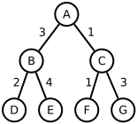
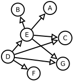
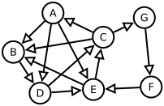
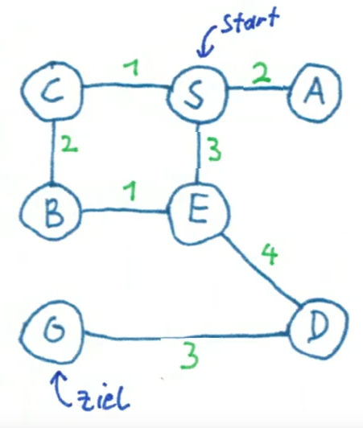
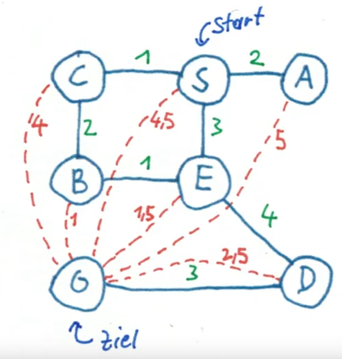

<!DOCTYPE html>
<html lang="en">
  <head>
    <meta charset="utf-8" />
    <meta name="viewport" content="width=device-width, initial-scale=1.0, maximum-scale=1.0, user-scalable=no" />

    <title>Suche</title>
    <link rel="shortcut icon" href="./favicon.ico" />
    <link rel="stylesheet" href="./dist/reset.css" />
    <link rel="stylesheet" href="./dist/reveal.css" />
    <link rel="stylesheet" href="./dist/theme/solarized.css" id="theme" />
    <link rel="stylesheet" href="./css/highlight/base16/zenburn.css" />


  </head>
  <body>
    <div class="reveal">
      <div class="slides"><section  data-markdown><script type="text/template">

# Suche
</script></section><section  data-markdown><script type="text/template">
### Beispiel 1 - Der Paketdienst

* Am Anfang der Fahrt erhält er 20 Pakete, die er während des Tages ausliefern muss
* Fragestellung: Was ist die beste Route? <!-- .element: class="fragment" -->
* Wieviel Möglichkeiten gibt es? <!-- .element: class="fragment" -->
</script></section><section  data-markdown><script type="text/template">
 <!-- .element height="30%" width="30%" -->

<small>Bildquelle: [Wikipedia](https://commons.wikimedia.org/wiki/File:11-simplex_graph.svg) von [Koko90](https://commons.wikimedia.org/wiki/User:Koko90)</small>

Hier die möglichen Wege für nur 11 Pakete...
</script></section><section  data-markdown><script type="text/template">
* Für die erste Fahrt gibt es 20 Möglichkeiten, für die zweite 19, ...
* Also gibt es 20 * 19 * 18 * 17 * 16 * ... * 2 Möglichkeiten <!-- .element: class="fragment" -->
* also 20! (sprich 20 Fakultät) <!-- .element: class="fragment" -->
</script></section><section  data-markdown><script type="text/template">
* Angenommen wir schaffen 1 Milliarde Möglichkeiten pro Sekunde zu berechnen...
* ... benötigen wir über 77 Jahre <!-- .element: class="fragment" -->
</script></section><section  data-markdown><script type="text/template">
### Beispiel 2 - Königsberger Brückenproblem


<small>Bildquelle: [Wikipedia](https://commons.wikimedia.org/wiki/File:Konigsberg_bridges.png) von Bogdan Giuşcă)</small>

* Frage: Gibt es einen Weg, bei dem man alle sieben Brücken genau einmal überquert? <!-- .element: class="fragment" -->
* Bonusfrage: Gibt es einen Rundweg folgend dieser Bedingung? <!-- .element: class="fragment" -->

<aside class="notes"><p>Königsberg war die Hauptstadt Ostpreußens. Nach 1945 wurde die nun russische Stadt in Kaliningrad umbenannt.</p>
</aside></script></section><section  data-markdown><script type="text/template">
Leonhard Euler bewies 1736, dass ein solcher Weg nicht möglich ist.

* Es dürfte maximal zwei Ufer mit einer ungeraden Zahl von angeschlossenen Brücken geben. <!-- .element: class="fragment" -->
* Diese zwei Ufer könnten Ausgangs- bzw. Endpunkt sein. <!-- .element: class="fragment" -->
* Nicht möglich ist ein "Rundweg" (auch Eulerweg genannt). <!-- .element: class="fragment" -->

<small>Die Anfänge der Graphentheorie gehen auf dieses Problem zurück.</small> <!-- .element: class="fragment" -->
</script></section><section  data-markdown><script type="text/template">
### Graphentheorie

<small>Ein *Graph* ist eine abstrakte Struktur, die eine Menge von Objekten (genannt Knoten) zusammen mit den zwischen diesen Objekten bestehenden Verbindungen (genannt Kanten) repräsentiert.</small>

<div data-id="graphs"></div>

<aside class="notes"><p>Weitere Beispiele: Buslinien, Stammbaum, State-Machines...</p>
</aside></script></section><section  data-markdown><script type="text/template">
### Eigenschaften von Graphen

<div data-id="graphs"></div>

* Kanten: gerichtet - ungerichtet, gewichtet - ungewichtet <!-- .element: class="fragment" -->
* Zyklen <!-- .element: class="fragment" -->
* Planar <!-- .element: class="fragment" -->
</script></section><section  data-markdown><script type="text/template">
### Baum


* kreisfrei (azyklisch) <!-- .element: class="fragment" -->
* Spezialfall: Binärer Baum - darf höchstens zwei untergeordnete Knoten haben <!-- .element: class="fragment" -->
* Begriffe: Wurzel, Ast, Blatt <!-- .element: class="fragment" -->
</script></section><section  data-markdown><script type="text/template">
## Uninformierte Suche
</script></section><section  data-markdown><script type="text/template">
### Breiten- und Tiefensuche

<iframe width="560" height="315" src="https://www.youtube.com/embed/7RCp2jNwxjQ" title="YouTube video player" frameborder="0" allow="accelerometer; autoplay; clipboard-write; encrypted-media; gyroscope; picture-in-picture; web-share" allowfullscreen></iframe>
</script></section><section  data-markdown><script type="text/template">
## Informierte Suche
</script></section><section  data-markdown><script type="text/template">
### Branch-and-Bound

<small>Unnötige Äste im Suchbaum werden nicht weiter untersucht (abgeschnitten)</small>

<iframe width="560" height="315" src="https://www.youtube.com/embed/5D4pjWX56Po" title="YouTube video player" frameborder="0" allow="accelerometer; autoplay; clipboard-write; encrypted-media; gyroscope; picture-in-picture; web-share" allowfullscreen></iframe>

<aside class="notes"><p></p>
</aside></script></section><section  data-markdown><script type="text/template">
### A* Algorithmus

<small>Es wird eine Heuristik (Abschätzung) verwendet, um die Suche zu optimieren</small>

* Beispiele: Luftlinie, Kostenabschätzung, ...
* Wichtige Bedingung: Eine Heuristik muss immer **optimistisch** sein

<aside class="notes"><p></p>
</aside></script></section><section  data-markdown><script type="text/template">
### A* Beispiel

<iframe width="560" height="315" src="https://www.youtube.com/embed/fI9PGLoRE2E" title="YouTube video player" frameborder="0" allow="accelerometer; autoplay; clipboard-write; encrypted-media; gyroscope; picture-in-picture; web-share" allowfullscreen></iframe>

<small>Für weitere Beispiele siehe [Graph Search Visualizer](https://huakunshen.github.io/GraphSearchVisualizer/)</small>
</script></section></div>
    </div>

    <script src="./dist/reveal.js"></script>

    <script src="./plugin/markdown/markdown.js"></script>
    <script src="./plugin/highlight/highlight.js"></script>
    <script src="./plugin/zoom/zoom.js"></script>
    <script src="./plugin/notes/notes.js"></script>
    <script src="./plugin/math/math.js"></script>
    <script>
      function extend() {
        var target = {};
        for (var i = 0; i < arguments.length; i++) {
          var source = arguments[i];
          for (var key in source) {
            if (source.hasOwnProperty(key)) {
              target[key] = source[key];
            }
          }
        }
        return target;
      }

      // default options to init reveal.js
      var defaultOptions = {
        controls: true,
        progress: true,
        history: true,
        center: true,
        transition: 'default', // none/fade/slide/convex/concave/zoom
        slideNumber: true,
        plugins: [
          RevealMarkdown,
          RevealHighlight,
          RevealZoom,
          RevealNotes,
          RevealMath
        ]
      };

      // options from URL query string
      var queryOptions = Reveal().getQueryHash() || {};

      var options = extend(defaultOptions, {"transition":"fade"}, queryOptions);
    </script>


    <script>
      Reveal.initialize(options);
    </script>
  </body>
</html>
